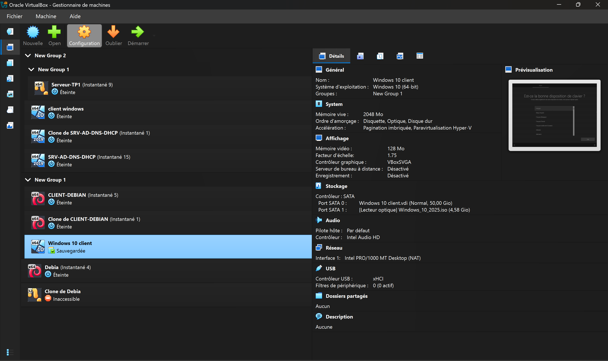

E6 / PRO
Infrastructure Complète
Conception et déploiement d'une infrastructure réseau isolée : Firewall pfSense, contrôleur de domaine AD/DNS et serveur DHCP centralisé.
Technicien Systèmes et Réseaux
Étudiant passionné en BTS SIO option SISR à l'IPSSI. Je conçois des infrastructures robustes et sécurisées. Mon objectif : allier performance technique et innovation numérique.
Immersion Support IT
Spécialités Maths & NSI
option : Euro-anglais
IPSSI Saint-Quentin
Conception et déploiement d'une infrastructure réseau isolée : Firewall pfSense, contrôleur de domaine AD/DNS et serveur DHCP centralisé.
Gestion des tickets d'assistance et dépannage matériel de proximité lors de mon stage.
Mise en place d'un outil de gestion de parc informatique pour le suivi des actifs.
Organisation d'un flux de veille sur les vulnérabilités réseaux via des outils RSS.
Utilisation intensive de VirtualBox pour simuler des réseaux locaux (LAN), tester des serveurs DNS et sécuriser des accès Debian via sudoers.

Screenshot de mon interface VirtualBox
Analyse de la vulnérabilité critique affectant le service de bureau à distance sur Windows Server, permettant une exécution de code à distance.
Poursuite en Master à l'IPSSI en Cybersécurité.
Administrateur Systèmes et Réseaux ou Expert Sécurité.
Réseau social professionnel
Retrouvez mon parcours détaillé et mon réseau sur LinkedIn :
LinkedIn | Ali ArbaouiRetrouvez mes projets sur github :